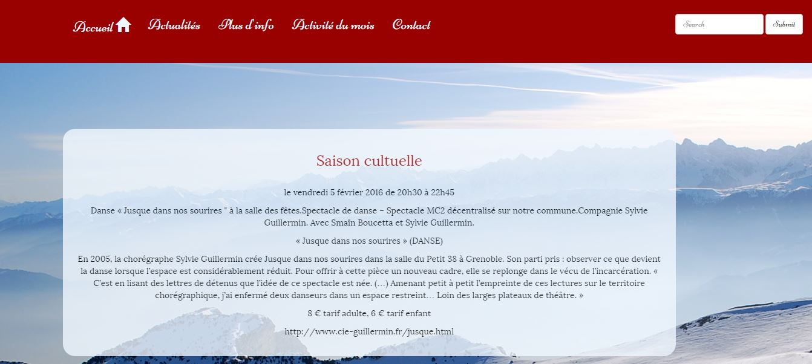
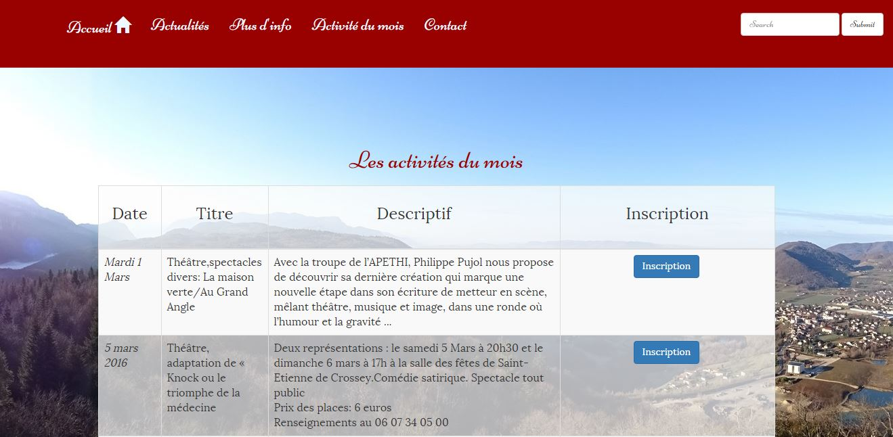

Voici quelques exemples de ce que je peux faire...
Mon CV en ligne
Réalisé avec Bootstrap, vous pouvez cliquer sur l'image pour entrer dans le site

Le projet du site de Trialp Moirans
Ce projet n'a débuté que récemment.
Il consiste à reconstruire le site entièrement, pour lui donner un coup de jeune...
C'est parfait pour appprendre à utiliser Bootstrap, mais ce site est en cours de construction, voici les deux premières pages:
Le site du village de Saint Etienne de Crossey
Ce site est en cours, c'est un projet OpenClassrooms... A visiter dans quelques jours, j'espère.
 